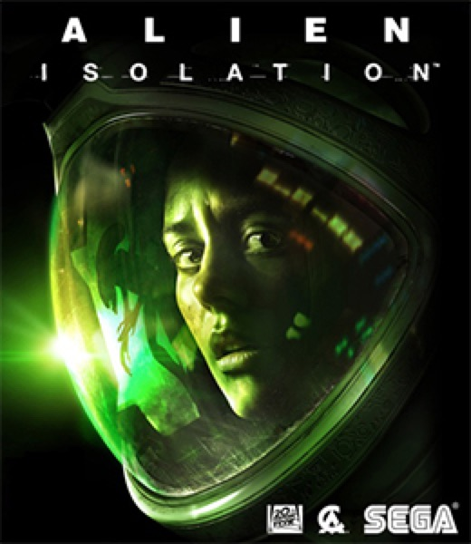

Horror · 2014
Alien: Isolation
One creature, no script, and the most faithful sci-fi set in games.

Cover: Wikipedia: Alien: Isolation
Facts
- Released
- 2014-10-07
- Genre
- Horror
- Category
- Horror
- Platforms
- Mobile, Nintendo, PC, PlayStation, Xbox
- Developers
- Creative Assembly
- Publishers
- Feral Interactive, Sega
PC requirements
- Minimum
- [object Object]
- Recommended
- [object Object]